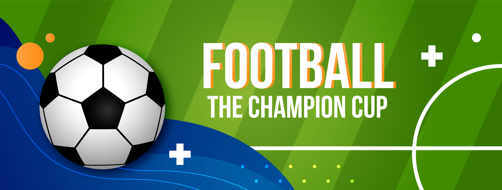

<div>
  <div id="carrousel-home" class="carousel slide" data-bs-ride="carousel">
    <div class="carousel-indicators">
      <button type="button" data-bs-target="#carrousel-home" data-bs-slide-to="0" class="active"
              aria-current="true" aria-label="Slide 1"></button>
      <button type="button" data-bs-target="#carrousel-home" data-bs-slide-to="1" aria-label="Slide 2"></button>
      <button type="button" data-bs-target="#carrousel-home" data-bs-slide-to="2" aria-label="Slide 3"></button>
    </div>
    <div class="carousel-inner">
      <div class="carousel-item active">
        
        <div class="carousel-caption d-none d-md-block">
          <h5>Futbol 11</h5>
          <p>El fútbol 11 promueve la competencia atlética y estratégica en un escenario completo, ideal para equipos
            que buscan desafíos a gran escala.</p>
        </div>
      </div>
      <div class="carousel-item">
        
        <div class="carousel-caption d-none d-md-block">
          <h5>Microfutbol</h5>
          <p>El microfútbol ofrece una intensa y dinámica experiencia deportiva en un formato ágil y emocionante.</p>
        </div>
      </div>
      <div class="carousel-item">
        
        <div class="carousel-caption d-none d-md-block">
          <h5>Torneos Élite</h5>
          <p>Desde Fútbol 11 hasta Microfútbol, nuestros torneos ofrecen emocionantes competencias para equipos de todos
            los tamaños y niveles.</p>
        </div>
      </div>
      <button class="carousel-control-prev" type="button" data-bs-target="#carrousel-home" data-bs-slide="prev">
        <span class="carousel-control-prev-icon" aria-hidden="true"></span>
        <span class="visually-hidden">Previous</span>
      </button>
      <button class="carousel-control-next" type="button" data-bs-target="#carrousel-home" data-bs-slide="next">
        <span class="carousel-control-next-icon" aria-hidden="true"></span>
        <span class="visually-hidden">Next</span>
      </button>
    </div>
    <div class="container p-4">
      <div class="intro-container">
        <h3 class="text-center primary-color letter-title">¿Preparado para simplificar la administración de
          torneos?</h3>
        <p class="letter-principal">¡Bienvenido a la solución definitiva para la administración de torneos! Si estás
          buscando una manera eficiente, intuitiva y poderosa para gestionar tus eventos deportivos, has llegado al
          lugar indicado.
          Nuestra plataforma está diseñada específicamente para facilitarte cada aspecto de la organización de torneos,
          desde la inscripción de participantes hasta la entrega de trofeos.
        </p>
      </div>
      <div class="container">
        <div class="row">
          <div class="col">
            <div class="feature-box">
              <i class="fas fa-clipboard-list"></i>
              <h5 class="letter-subtitle primary-color text-center">Inscripción Sencilla</h5>
              <p class="letter-home">Olvídate del papeleo y las complicaciones. Con nuestra herramienta de
                inscripción en línea, los participantes pueden registrarse fácilmente desde cualquier dispositivo. Los
                organizadores pueden
                rastrear inscripciones en tiempo real y obtener informes detallados con solo unos clics.</p>
            </div>
            <div class="feature-box">
              <i class="fas fa-calendar-alt"></i>
              <h5 class="letter-subtitle primary-color text-center">Generación Automática de Calendarios y Tablas</h5>
              <p class="letter-home">Di adiós a las interminables horas creando calendarios y tablas de competición.
                Nuestra plataforma
                genera automáticamente el calendario de partidos y las tablas de clasificación, asegurando que todo esté
                listo para el día del torneo.
              </p>
            </div>
            <div class="feature-box">
              <i class="fas fa-chart-line"></i>
              <h5 class="letter-subtitle primary-color text-center">Gestión Integral de Resultados</h5>
              <p class="letter-home">Registra los resultados de los partidos en tiempo real y permite que los
                participantes y el público
                los consulten al instante. Nuestra tecnología asegura que las tablas de clasificación se actualicen al
                momento, reflejando el desempeño de cada equipo o jugador.</p>
            </div>
          </div>
          <div class="col">
            <div class="feature-box">
              <i class="fas fa-bullhorn"></i>
              <h5 class="letter-subtitle primary-color text-center">Comunicación Eficaz</h5>
              <p class="letter-home">Mantén a todos los involucrados informados con notificaciones automáticas. Envía
                recordatorios de
                partidos, cambios en el calendario y anuncios importantes directamente a los teléfonos de los
                participantes y seguidores.</p>
            </div>
            <div class="feature-box">
              <i class="fas fa-chart-pie"></i>
              <h5 class="letter-subtitle primary-color text-center">Análisis y Reportes Detallados</h5>
              <p class="letter-home">Accede a reportes detallados que te proporcionan una visión completa del
                rendimiento de los
                jugadores, estadísticas de los partidos y mucho más. Utiliza esta información para mejorar futuros
                torneos y ofrecer una experiencia aún mejor.</p>
            </div>
            <div class="feature-box">
              <i class="fa fa-paper-plane"></i>
              <h5 class="letter-subtitle primary-color text-center">Únete a la Revolución en la Administración de
                Torneos</h5>
              <p class="letter-home">Miles de organizadores ya han simplificado la administración de sus torneos con
                nuestra plataforma. ¿Estás listo para unirte a ellos? No esperes más y comienza a disfrutar de una
                gestión de torneos sin estrés y completamente eficiente. ¡Inscríbete hoy y lleva tus torneos al
                siguiente nivel!</p>
            </div>
          </div>
        </div>
      </div>
      <div class="card-group container">
        <div class="card">
          
          <div class="card-body">
            <h5 class="card-title primary-color">Torneo Futbol 11</h5>
            <p class="card-text">Para el torneo de Fútbol 11, las inscripciones ya están abiertas y tienen un costo de
              $200.000 por equipo. La cantidad máxima de equipos participantes es de 16, garantizando una competencia
              emocionante y bien organizada. La fecha de inicio está programada para el 1 de agosto de 2024, y se estima
              que el torneo finalizará el 30 de septiembre de 2024. Los premios incluyen trofeo y medallas para el
              equipo campeón, así como reconocimientos individuales para el máximo goleador, mejor portero y jugador más
              valioso. ¡No pierdas la oportunidad de participar en este increíble evento deportivo!</p>
            <p class="card-text"><small class="text-body-secondary">Última actualización hace 3 minutos</small></p>
          </div>
        </div>
        <div class="card">
          
          <div class="card-body">
            <h5 class="card-title primary-color">Torneo Futbol 8</h5>
            <p class="card-text">Para el torneo de Fútbol 8, las inscripciones están abiertas con un costo de
              inscripción de $150.000 por equipo. Se permitirá un máximo de 12 equipos para garantizar una competencia
              dinámica y emocionante. El torneo está programado para comenzar el 15 de julio de 2024, con una duración
              estimada hasta el 31 de agosto de 2024. Los premios incluyen trofeo y medallas para el equipo campeón, así
              como reconocimientos individuales para el máximo goleador, mejor portero y jugador más valioso. ¡Únete a
              nosotros y participa en este torneo de Fútbol 8 lleno de acción y competitividad!</p>
            <p class="card-text"><small class="text-body-secondary">Última actualización hace 3 minutos</small></p>
          </div>
        </div>
        <div class="card">
          
          <div class="card-body">
            <h5 class="card-title primary-color">Torneo Microfutbol</h5>
            <p class="card-text">Para el torneo de Microfútbol, las inscripciones están disponibles por $100.000 por
              equipo.
              Se aceptarán hasta 10 equipos para asegurar partidos intensos y emocionantes. El torneo está programado
              para iniciar el 10 de septiembre de 2024 y se estima que finalizará el 30 de octubre de 2024. Los premios
              incluyen trofeo y medallas para el equipo campeón, junto con reconocimientos individuales para el máximo
              goleador, mejor portero y jugador más valioso. ¡No te pierdas la oportunidad de participar en este
              emocionante torneo de Microfútbol!</p>
            <p class="card-text"><small class="text-body-secondary">Última actualización hace 3 minutos</small></p>
          </div>
        </div>
      </div>
    </div>
  </div>
